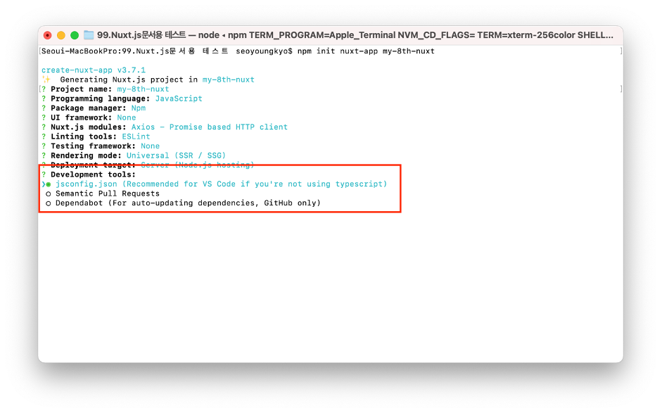
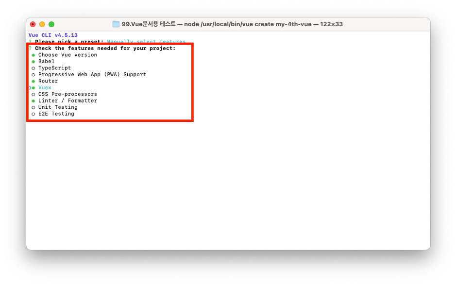

프로젝트 생성
-
- 프로젝트 생성은 크게 SPA(Single Page Application)웹, SSR(Server Side Rendering)웹 구축을 위한 생성 2가지 방법이 있습니다.
물론 SSR웹 구축을 위해서 아래에 명시된 Nuxt.js를 이용하지 않고도 충분히 SSR웹 구축은 가능합니다. 다만, Nuxt.js가 가지고 있는 몇 가지 장점때문에 Vue.js 프로젝트 생성은 Nuxt.js를 이용합니다.
Nuxt.js를 이용한 프로젝트 생성
-
- 후술 할 Vue CLI를 이용한 프로젝트 생성과는 달리 중대형 프로젝트 구축 및 SSR웹 개발을 위한 프로젝트에 용이합니다.
그 외 SEO 등의 장점에 따라 특수한 경우를 제외하고 모든 프로젝트는 Nuxt.js를 이용하여 프로젝트를 생성합니다. 또한, Nuxt.js는 기본적으로 Vue.js 2.x가 포함이 되어 있기에 따로 Vue.js를 따로 설치를 하지 않아도 됩니다.
기본 프로젝트 생성
-
- 생성 시 일부 옵션에 대해서는 복수 선택을 할 수 있습니다. 복수 선택은 스페이스바를 통해 선택/취소를 할 수 있습니다.
-
-
1. npm init nuxt-app 프로젝트 이름(폴더명)

-
2. Project name : 프로젝트 명을 기입합니다. 기입한 명은 브라우저 title가 되며, 기입하지 않을 경우 1번 항목의 프로젝트 이름(폴더명)으로 생성됩니다.

-
3. Programming language 선택 : 프로젝트에 사용할 Script언어를 선택합니다. 필요에 따라 TypeScript를 선택합니다.
-
4. Package manager : 패키지 관리자 선택으로 npm을 선택합니다.
-
5. UI framework : 사용할 UI프레임워크를 선택하며, 기본은 None를 선택합니다.
-
6. Nuxt.js modules : Nuxt.js 모듈 사용 여부 및 사용할 모듈 선택을 할 수 있으며, Axios는 필수로 선택합니다.
-
7. Linting tools : Lint 툴(tool) 사용 여부 및 사용할 툴 선택을 할 수 있으며, 기본 ESLint를 선택합니다.
-
8. Testing framework : 테스트 프레임워크 사용 여부 및 프레임워크를 선택할 수 있습니다. 프로젝트 상황에 따라 선택하지만 기본은 None를 선택합니다.
-
9. Rendering mode : SPA, SSR(SSG)을 선택할 수 있습니다. SSR선택을 기본을 합니다.
-
10. Deployment target : 배포대상을 선택을 합니다. Server (Node.js hosting)를 선택합니다.
-
11. Development tools : 개발도구를 선택합니다. 추천하고 typescript를 사용하지 않는다면 jsconfig.json을 선택합니다.
 -
12. Continuous integration : CI(Continuous Integration) 사용 여부와 사용할 경우 CI서비스 선택을 할 수 있으며, None를 선택합니다.
-
13. What is your GitHub username? : 깃허브 정보를 입력합니다.
-
14. Version control system : 버전 컨트롤 시스템 사용여부 및 사용할 서비스를 선택합니다.
git를 사용한다면 선택 후 다음으로 넘어갑니다. 기본은 None를 선택합니다. -
15. 설치 완료

-
16. 서버 실행
Vue Cli를 이용한 프로젝트 생성
-
- SPA 및 소규모의 프로젝트에 용이하며, 최초 단계인 프리셋(preset) 선택 단계에서 기본(Default)를 선택하여 생성할 수 있지만,
Vue Router 및 상태 관리 라이브러리인 Vuex를 프로젝트 생성 시에 설치를 할 수 있으니 프리셋(preset) 선택은 수동으로 생성합니다.
기본 프로젝트 생성
-
1. vue create 프로젝트명(폴더명)
- 프로젝트를 진행할 폴더는 따로 생성할 필요는 없으며, 터미널을 통해 명령어를 입력하기에 생성할 프로젝트명(폴더명) 상위 폴더에서 명령어를 입력합니다. -
2. 프리셋 선택 : Vue Route 및 Vuex을 기본으로 설치를 위해서는 Manually select features 선택
- 방향키로 프리셋 선택 후 엔터 -
3. 사용할 기능 선택 : 기본 선택된 값 외에 Router, Vuex를 선택하며 프로젝트에 따라 필요한 기능을 선택합니다.
 -
4. 사용할 Vue.js 버전 선택 : 2.x를 사용하되 프로젝트에 따라 3.x를 선택합니다.
-
5. Vue Router Mode 선택 : 기본 history모드이며, 생성 후에 hash모드로 변경 가능합니다.
-
6. 코딩 포맷 설정 : 코드 작성 규칙 및 품질을 높일 수 있는 도구이며, 기본인 ESLint with error prevention only를 선택 합니다.
-
7. Lint 추가 기능 선택 : Lint on save를 선택 합니다.
-
8. Babel, ESLint 등의 설정 저장 파일 선택 : In package.json을 선택 합니다.
-
9. 프로젝트 사전 설정 저장 여부 : 앞서 설정했던 프로젝트 생성을 템플릿 형태로 저장여부를 선택할 수 있으며, 기본값인 N으로 진행합니다.
-
10. 생성 완료 : 생성 완료 후 폴더 진입 후 서버 실행
-
11. 생성 완료 및 서버 실행 : 기본적으로 필요한 부분은 자동으로 설치를 해주며, 생성 완료 후 터미널 창에서 설치 완료 메시지와 함께 서버 실행 가이드 문구 확인이 가능합니다.
- cd 프로젝트명(폴더명)
- npm run serve -
12. 완료
서버 실행(npm run serve) 후 http://localhost:8080/를 입력하면 아래의 기본 화면을 확인 할 수 있습니다. (이때 포트번호(8080)이 기본입니다.)
https통신을 위한 Axios 설치
-
- Axios는 브라우저, Node.js를 위한 Promise API를 활용하는 HTTP 비동기 통신 라이브러리 입니다.
생성한 프로젝트(폴더)에서 터미널 실행 후 아래의 명령어를 입력하여 설치하며, 설치 후 package.json파일의 “dependencies”에 추가가 됩니다.
Reference
-
- 삭제는 npm의 삭제 명령어를 통해 삭제를 할 수 있습니다.
아래 명령어 중 1번째 명령어 입력 후 에러(checkPermissions) 후 삭제가 되지 않는 경우가 있는데 이는 대부분 권한 문제이니 아래의 명령어 중 2번째 명령어를 입력 후 계정(컴퓨터) 비밀번호를 입력하면 삭제가 됩니다. -
1. Node.js : https://nodejs.org/ko/
-
2. Npm : https://www.npmjs.com/
-
3. Vue.js 공식
- A. 2.x : https://vuejs.org/
- B. 3.x : https://v3.vuejs.org/ -
4. Vue Cli : https://cli.vuejs.org/
-
5. Vuex :https://vuex.vuejs.org/
-
6. Vue Router :https://router.vuejs.org/
-
7. xios :https://axios-http.com/
-
8. Nuxt.js :https://nuxtjs.org/